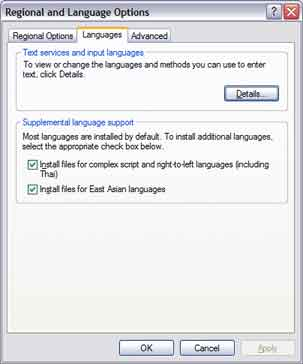
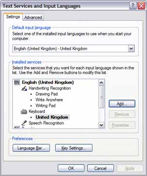
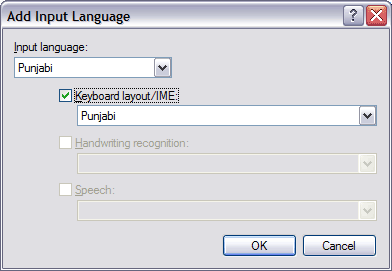

Quick LinksArticle LinksNone
|
Windows XPEnabling Punjabi support on Windows XP is easy! Carry on reading to find out how. Control PanelLoad the control panel by clicking on the "Start"' menu and pressing the "Control Panel" icon. Make sure you are in category view. If you are not, there should be an option on the left hand side to "Switch to Category View". Select the icon that says "Date, Time, Language and Regional Options" and then select "Regional and Language Options". Regional and Language Options Select the "Languages" tab and make sure you select the option saying "Install files for complex script and right-to-left languages (including Thai)". A confirmation message should now appear - press "OK" on this confirmation message. Now select the button that says "Details...". Text Services and Input Languages Press the "Add..." button. This should load a dialog box asking you which input language to add. Select "Punjabi" from the drop-down list and make sure the check box labelled "Keyboard layout/IME" is selected as shown:  Now select "OK". This should now enable you to both read and write Gurmukhi on your Windows XP computer. You can use the combination ALT + SHIFT to switch between different keyboard layouts (e.g. from a UK Keyboard to Gurmukhi and vice-versa). If you want a language bar, you can select it by pressing the "Language Bar..." button on the "Text Services and Input Languages" dialog and then selecting "Show the language bar on my desktop". The language bar enables you to visually select the keyboard layout you are using. Once this is done, press "OK" on all remaining dialog boxes. Congratulations - you should now be able to use Unicode Gurmukhi! |
Copyright © 2004-2005 Sukhjinder Sidhu. All rights reserved.